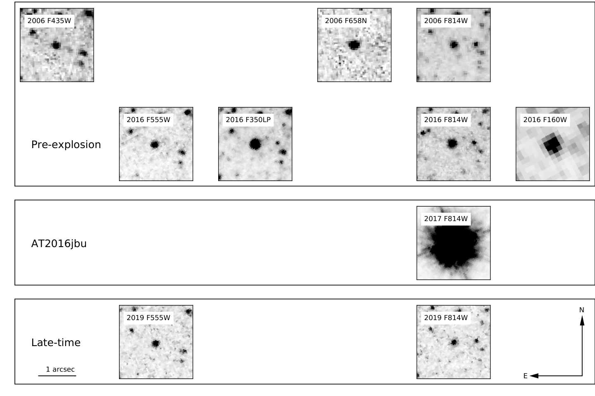
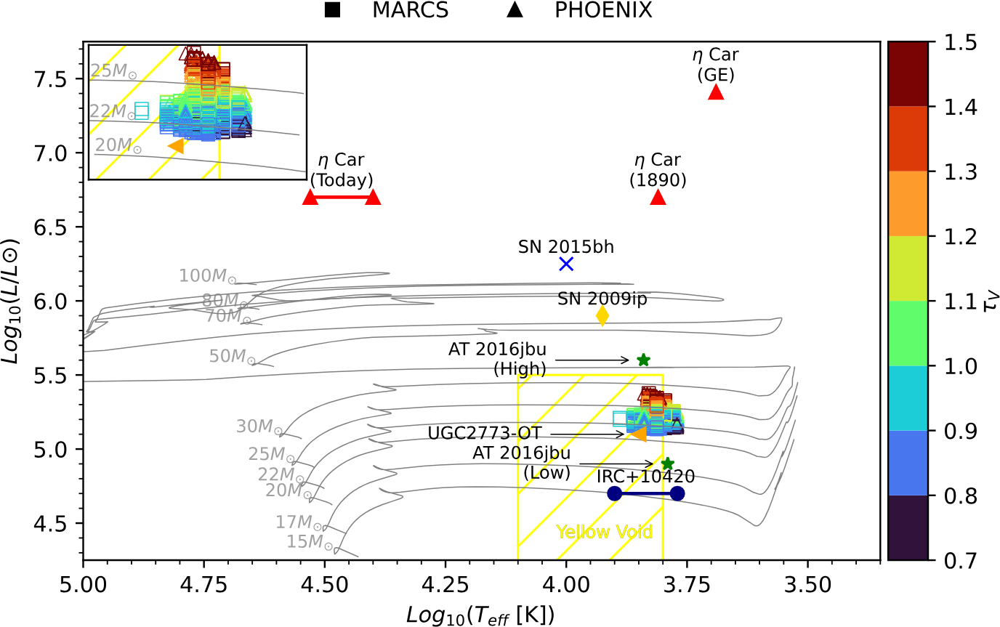

Progenitor, environment, and modelling of the interacting transient AT 2016jbu (Gaia16cfr)
Brennan, S. J., Fraser, M., Johansson, J., et al. · MNRAS 513, 5666 (2022)
Overview
Background. Light curves and spectra alone rarely fix a unique progenitor. Connecting observations to stellar models needs pre-explosion constraints, host context, and simple physical modelling, especially for complex interacting transients such as AT 2016jbu.
Science. This companion paper combines archival imaging, host-galaxy information, and modelling to constrain the progenitor channel, mass-loss history, and structure of the circumstellar material around the event.
Impact. Together with the photometry paper, it shows how modern transient studies often split into a phenomenology paper plus an interpretation paper, turning raw data into quantitative limits useful for comparing with other interacting SNe and with stellar-evolution theory.
Key figuresfrom the paper




SED fits, the MUSE environment analysis, and SNEC model light curves are in the arXiv HTML and PDF versions.